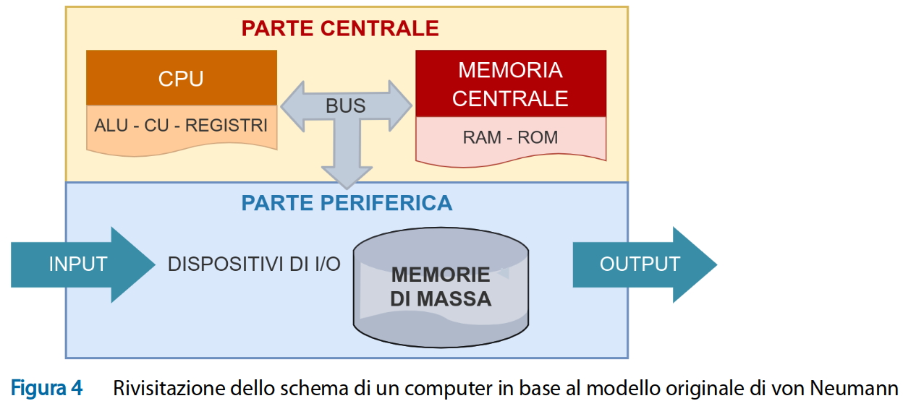

Appunti di laboratorio - elenco completo Contatto maurizio.boscaini@unitn.it
NOTA: questi appunti sono da intendersi solo come aiuto allo studio e alla preparazione all'esame.
La programmazione è difficile.
Si può imparare a programmare solo programmando.
Il linguaggio Markdown è un linguaggio di marcatura di testi che consente di etichettare un testo al fine di dargli un senso, un valore, una significo (una semantica), una struttura. Consente quindi di aggiungere metadati dai dati. I metadati arricchiscono il contenuto informativo senza sostanzialmente modificarlo.
Il linguaggio Markdown di avvale di una serie di simboli per marcare (o taggare) il testo.
Un documento Markdown viene salvato solitamente in un file di testo con estensione .md.
Dopo aver creato un nuovo documento, è necessario salvarlo su file con l'estensione opportuna.
- Per andare a capo, inserisco due spazi alla fine della riga
- Per i paragrafi, inserisco due a capo
- Per i titoli, utilizzo uno o più # (titolo di livello 1, ecc.)
- Per evidenziare un testo posso delimitarlo:
- con *
- con **
- con _** e _**
- Per evidenziare un blocco di testo utilizzo >
- Il backslash, ovvero la barra rovescia, è il caratteri di escape in molti linguaggio e specifica che il carattere/i caratteri successivi devono essere interpretati nel loro significato lettere (es. l'hashtag viene interpratato come carattere e non come simbolo per denotare un titolo di livello uno)
- Per inserire un link (o, meglio, hyperlink) utilizo il formato [descrizione](URL). L'URL è l'indirizzo Internet della risorsa (es. pagina web). Per trasformare un URL (indirizzo Internet) in un link si può anche delimitarlo con parentesi angolari. Per es. <http://www.esempio.it>
- Per inserire un'immagine utilizzo il formato 
- Il backtick singolo ` per un pezzo di codice. Tre backtick ``` delimitano l'inizio e la fine di un blocco di codice.
Documento
I linguaggi in informatica possono essere classificati in:
- linguaggi di programmazione
- linguaggi di rappresentazione dei dati (o delle informazioni)
Un ipertesto è un testo arricchito da link ed eventualmente contenuti multimediali (immagini, video ecc.).
Installare:
- Visual Studio Code Download
- estensioni di VS Code
- Auto-Open Markdown Preview
- (facoltativa) Markdown All in One
- (facoltativa) Markdown PDF
CTRL + SHIFT + P consente di eseguire dei comandi in VS Code, come per esempio la conversione del documento Markdown in PDF
Informatica
- Etimologia: information automatique -> informatique
- Computer Science (nel mondo anglosassione)
Dato e informazione
Un dato grezzo diventa informazione allor quando viene interpretato (assumendo un valore, un significato, quindi il dato grezzo viene elaborato, trasformato). L'interprete grazie all'informazione arrichisce la propria conoscenza e può agire in modo più o meno saggio. Piramide DIKW (Data, Information, Knowledge, Wisdom)
Dato - Informazione - Conoscenza - Saggezza
Es. 347256124
Trasmissione comunicazione
Nella trasmissione si tramettono dati, nella comunicazione si condividono informazioni tramite lo scambio di messaggi.
Sistema
Un sistema secondo la Teoria unificato, o generale, dei sistemi, che studia i sistemi a prescindere dalla loro natura, è:
- un insieme di elementi che formano un tutt'uno organico
- gli elementi iteragiscono tra loro
- il sistema interagisce con l'esterno (input/output)
- il sistema ha uno scopo (che può essere quello di studio)
Lo scambio interno ed esterno è una combinazione di:
- energia
- materia
- informazione
Sistema di elaborazione o computer
Schema a strati funzionali di un computer
- (SW) Software Applicativo
- (SW) Software di base (Operating System)
- (FW) Firmware (software generalmente cablato, Basic Input Output System, BIOS, ora UEFI)
- (HW) Hardware (componenti fisici, v)
Inferfaccia utente
Il sistema operativo mette a disposizione due tipologie di interfaccia per l'utente:
- CLI (Command Line Interface), o interfaccia a carattere, o testuale
- GUI (Graphical User Interface), che utilizza un dispositivo di puntamento (mouse, touch ecc.) e crea un ambiente grafico utilizzando la metafora del della scrivania di un ufficio (desktop)
Architettura o modello di von Neumann per rappresentare la struttura di un elaboratore. 
Problema
- Situazione che richiede una soluzione
- Quesito che richiede una risposta
Algoritmo
- Procedimento per risolvere un problema.
- Una sequenza finita di passi elementari per la risoluzione di una classe di problemi.
- finitezza
- elementarità e non ambiguità
- generalitàes.3 + 2 ?a + b ?
Sequenza = serie di elementi anche ripetuti in cui conta l'ordine
Quindi, una sequenza è diversa da un insieme (elementi ripetuti e ordine)
Programma
- Un programma è l'implementazione (o la codifca) in un linguaggio di programmazione di un algoritmo.
- Richiede un linguaggio di programmazione
Livelli di linguaggio
- Linguaggio naturale (essere umano)
- È ambiguo (es. "sale in cucina")
- Descrizione intermedia dell'algoritmo
- Modalità per rappresentare gli algoritmi
- Pseudocodice, pseudocodifica, pseudolinguaggio, linguaggio di progetto.
- Flowchart o diagrammi di flusso.
- Linguaggio di programmazione
- Linguaggio macchina (automa)
Linguaggio
Un linguaggio si compone di:
- alfabeto = insieme di simboli
- vocabolario = insieme di parole (sequenze di simboli) valide
- sintassi = insieme di regole per la costruzione di frasi
- semantica = senso/valore/significato delle parole e delle frasi